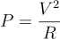

Em Busca de um Chuveiro
Chegou a hora de você comprar um chuveiro novo, mas você está preocupado com o impacto que ele pode ter na sua conta de energia elétrica. Felizmente, você está aprendendo a programar em Python e pode escrever um programa para verificar se um dado chuveiro é uma boa escolha.
Em relação ao chuveiro, você tem duas informações: o valor R da resistência e a voltagem V
de operação. Note que a loja que você escolheu tem um padrão não
convencional para descrever o chuveiro, informando a resistência no
lugar da potência, então você pode calcular a potência utilizada pelo
chuveiro pela seguinte formula.

Além das informações sobre o chuveiro você também tem uma estimativa do valor T correspondente a quantas horas o chuveiro ficara ligado em uma semana e o custo C
em reais do kWh na sua conta de energia. Lembrando que o consumo em kWh
pode ser calculado ao multiplicarmos a potência do aparelho pelo tempo
de uso em horas e dividirmos por 1000. Com esses dados, você deseja
escrever um programa que determine se o consumo do seu chuveiro é menor
ao igual a um valor limite L.
Como entrada, seu programa receberá 5 linhas com os valores correspondentes a R, V, T, C e L, onde C é um valor real e os demais são valores inteiros. Como saída, seu programa devera imprimir um valor booleano True,
caso o valor que você espera pagar na sua conta de energia por causa do
chuveiro em uma semana seja menor ou igual ao seu limite L ou False, caso contrario.
Exemplos de entradas e saídas esperadas pelo seu programa:
Teste 01
2
127
10
0.15
10
False
Teste 02
8
220
14
0.34
30
True
Teste 03
3
127
11
0.81
50
True
Código Base
No arquivo auxiliar lab02.py você irá encontrar um código base para dar início ao processo de elaboração desse programa.
Orientações
- Veja aqui a página de submissão da tarefa.
- O arquivo a ser submetido deve se chamar lab02.py.
- No link "Arquivos auxiliares" há um arquivo compactado (aux02.zip) que contém todos os arquivos de testes abertos (entradas e saídas esperadas).
- O laboratório é composto de 10 testes abertos e 10 testes fechados.
- O limite máximo será de 20 submissões.
- Acesse o sistema SuSy com seu RA (apenas números) e a senha que você utiliza para fazer acesso ao sistema da DAC.
- Você deve seguir as instruções de submissão descritas no enunciado.
- Serão considerados apenas os resultados da última submissão.
- Esta tarefa tem peso 1.
- O prazo final para submissão é dia 07/04/2024 (domingo).